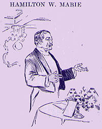

|  HAMILTON W. MABIE said: IT is incredible, Mr. Chairman, and ladies and gentlemen, that you should be glad to hear from any one at this hour. I want to put an emphasis on the word. As I have heard these charming contributions in prose and verse, I have been reminded of that Saturday morning years ago when Tom Sawyer was ordered out to whitewash the fence, and he sat there hopeless, while the birds were singing about him, and then he devised a plan that Mark Twain schemed to make all other boys do his work; and there they were doing it, whitewashing the fence all day, and he went home at the end of the day with four marbles and some apples and some string in his pocket, everything in his pocket which a boy will have, everything which a well-ordered boy's pocket naturally gets hold of; and it has occurred to me that when Mark Twain wrote that he was in a prophetic mood--he was describing what we are doing to-night. We are offering ourselves to do his white-washing (laughter), and he is presently going home with his pocket full of compliments and tributes of recognition of his Christian character and good wishes for the future, and with his heart full of the affection which we have put there. Now, the thing that I have against Mark Twain is the extraordinary length not of his years, but the duration of his acquaintance. Shakespeare knew a good many people, and went back a long way to the beginning of his acquaintance, as far back as the early days of Greece and the beginning of Egypt; but Mark Twain ante-dates them all; he begins with our first parents. He understood and defined the psychological development of the first woman, and he also traced the growth of the soul and heart of the first man. He seems to know more about Adam and Eve than the theologians, but I want to call his attention to the fact that he has been too ardent, for in that historical episode there is a third person whose diary remains unrecorded, and it remains for him to write the diary of the Devil. (Laughter and applause.) The Devil still walks abroad in the land, and there have been many evidences of late that he is walking faster and farther than he ever did before. And then again he was present in King Arthur's court, and he bore himself through that with all the cool hauteur of an American demagogue, born on the Mississippi River seventy years ago. It reminds me of what happened in the Palace at Amsterdam, when a part of tourists was being shown through by a guide, who was explaining everything very volubly, and an American farmer who happened to be with the party immediately pricked up his ears and said, "Is that a real genuine throne?" The guide said it was, and then the farmer, quickly lifting up the rope, covered with red velvet, as is customary in such exalted places, said, "Well, if it is, I am going to sit upon it," and he sat upon it, before anybody could stop him. And so Mark Twain has in the same way seated himself on thrones and in presences, -- whether he was in doubt from the fact of not reading intelligent books on etiquette who can say? Then who will ever fail to thank him for the tenderness and beauty and piety with which he has recalled the marvellous career of that beautiful woman, Jeanne d'Arc. You see the round tower and square in Rouen which are associated with her tragic career. He has made the epic of the Mississippi, and he took the Innocents abroad and exposed them in all pristine purity to the dangers and pitfalls of Europe. Now, Mr. James has shown the American modified by Europe, but Mark Twain has shown Europe aghast at America. (Laughter.) He has had two great pieces of good fortune, concerning which I should like to expand, but as to which I must content myself with simply stating that he had the same good fortune which Aristophanes and Shakespeare and Cervantes had. He was not afraid of life when he saw it. He thought in order to be great and fine and real art must not be non-comprehensible. I remember not many years ago, at the Authors' Club, on New-year's night, when a distinguished English author asked Mr. Stockton what was the difference between an American joke and a foreign joke, and Stockton said at once, "Well, for one thing, you can understand an American joke." Now, Mark Twain has been comprehensible from the start. There was a sign in Venice, two years ago last summer, which amused some of us greatly. It said, "English spoken American understood." (Laughter.) Mark Twain has helped to make American more than Emerson has, who always loved the plain American. And the Yankee not only brought joy to James Russell Lowell, but, in my judgment, gave Lowell the only chance he will have of being finally among the Immortals. Then he had the great good sense and good fortune, like Cervantes and Aristophanes, to treat his situations humorously, because if there is anything that tests the condition of man, it is the condition of man in the new continent, living under conditions that are so unfriendly to his real spiritual significance that is must amuse the gods themselves. But remember, there is that Homeric laughter, and, my friends, that all the boys envied Huckleberry Finn because he did not have to go to Sunday-school or listen to sermons or go to bed at a certain time or wear shoes; he lived as his creator has described him, a gaudy outcast. Now, it has been the good fortune of Mark Twain to be a gaudy outcast all his life, and so he has ranked himself, in the opinion of the world, among the four or five groups of religious spirits in American literature. (Applause.) He has never been afraid to make companionship with a real man and a real boy whenever and wherever he saw them, without regard to manners or speech or dress. They have been a bright lot, those boys of his, judged from the conventional standpoint, -- a bad lot. I don't mean that he ever really collects them all for family prayers, but they have stood by him through thick and thin, and if the popular verdict has any basis now, they are generously supporting him, which is what all good boys do when they are loyal to their maker. He was a privileged character. The Greeks would have crowned him with laurel, and our hope for you and our belief now is that with the great reputation you have made, the laurel may bring you the absence which makes for things in the tumult of life, and will bring that respect which is for the soul of peace and joy in the maturing of a man's power and the return of his labor. (Applause.) |